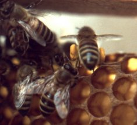
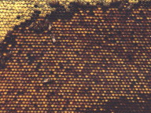

Il polline è una sostanza proteica ed è importante per l'alimentazione e la crescita degli individui dell'alveare. Raccogliendolo, volando di fiore in fiore, l'ape effettua l'impollinazione di molte specie vegetali, consentendo la fecondazione e quindi lo sviluppo e la maturazione dei frutti.